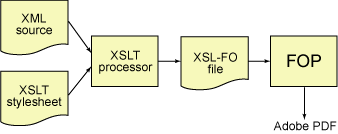
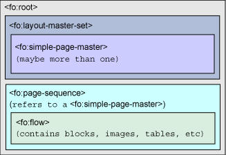
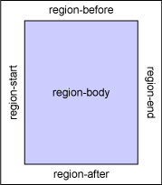

能够生成PDF文件，总是件让我感到很神秘的事情。我以前用过的生成PDF的方法有1）将相关文件用相应的软件打开，“打印”到一个文件如ali.prn，然后手工将ali.prn改为ali.ps,再用GostView打开ali.ps,最后用其convert功能生成pdf文件，有一定比率的不成功；2）利用Acrobat Distiller；3）利用Acrobat PDFWriter。
现在，可以通过xsl-fo和apache fop编程实现，总让我感到兴奋。
1、下载安装及运行fop
去fop主页下载fop，有两个版本一个是维护版一个是设计版，我下的维护版的0.20.5版binary包。解压缩到$FOPHOME，此目录下有fop.cmd(for windows)或fop.sh(for *nix)。
从这儿下载示例sample.fo文件，运行
2、将 XML 文档转换为 PDF 文件需要两个基本步骤：
1)用 XSLT 样式表将 XML 文档转换为由 XSL-FO 元素构成的文件。要执行这一转换，只需用调用 XSLT 处理器。
2)用某种显示引擎将 XSL-FO 元素转换为 PDF 文件。
3、XSL-FO 文档定义了制作高质量可打印文档时非常重要的几件事情：
1)有关页面的实际大小的信息（信纸和 A4 等等）
2)有关页边距（顶部、左边、底部和右边）、页眉和页脚和页面其它特性的信息
3)有关文本的字体、字体大小、颜色和其它特征的信息
4)要打印的实际文本，由描述段落、突出显示、表等类似物的元素来标记
4、XSL-FO文档结构

<fo:root> 元素包含 <fo:layout-master-set> 和 <fo:page-sequence>。
<fo:layout-master-set> 通常包含关于页面布局的信息，而 <fo:page-sequence> 包含您正在格式化的实际内容。
5、示例讲解
| sample.fo | 说明 |
| <fo:root xmlns:fo="http://www.w3.org/1999/XSL/Format"> | 根元素<fo:root>,fo为命名空间前缀,包含一个 <fo:layout-master-set>，然后是一个或多个 <fo:page-sequence>。 |
| <fo:layout-master-set> | 指定页面定义,可以使用 <fo:simple-page-master> 元素来定义所需的每一种页面布局. |
| <fo:simple-page-master master-name="main" | 定义某个特定页面的布局, maste-name是该页面master的名称。 |
| margin-top="36pt" margin-bottom="36pt" | 页面顶底边距 |
| page-width="8.5in" page-height="11in" | 页面实际宽高 |
| margin-left="72pt" margin-right="72pt"> | 页面左右边距 |
| <fo:region-body margin-bottom="50pt" margin-top="50pt"/> | 为 region-body 区域定义了长度为 50 点的顶部和底部页边距,页面上还有region-before/region-after/region-start/region-end四区域。 |
| </fo:simple-page-master> | |
| </fo:layout-master-set> | |
| <fo:page-sequence master-reference="main"> | <fo:page-sequence> 定义文档内使用的页面布局的序列,此处将main用于所有页面 |
| <fo:flow flow-name="xsl-region-body"> | <fo:flow>定义在指定区域内显示的内容, 由于显示引擎(如fop)可以自动或据指定规则计算换行、分栏、分页符, 故称之为流。 |
| <fo:block font-size="14pt" line-height="17pt"> | <fo:block> 是最基本的元素，用于格式化一个文本块, 它类似于 HTML 中的 p 元素<fo:block> 元素总是会产生一个换行。此处定义字体大小和行高，有行间距为3，此值一般为3－6。 |
| This is a paragraph of text. Notice that as | |
| <fo:inline font-style="italic">this meaningless | <fo:inline> 在现有 <fo:block> 内定义一些新的文本特性. |
| prose</fo:inline> drones on and on, the FOP | |
| software automatically calculates line breaks for us. | |
| Isn't that fascinating? | |
| </fo:block> | |
| </fo:flow> | |
| </fo:page-sequence> | |
| </fo:root> |
6、两个概念
页面布局(layout)主要设置与纸有关的信息；页面则是指用以打印的区域。页面又分为5个区域(region)，如右图。上例中只用到了region-body区域。
7、xsl-fo中关于距离的单位
| 单位 | 含义 |
| cm | 厘米 |
| mm | 毫米 |
| in | 英寸 |
| pt | 点（72 点 = 1 英寸） |
| pc | 派卡（12 点 = 1 派卡，6 派卡 = 1 英寸） |
| px | 像素（有时随格式化程序或设备的不同而有所不同，所以要小心使用） |
| em | 一个大写 M 的宽度 |
8、<fo:inline>元素
设置粗体用font-weight="bold",斜体字用font-style="italic",字体如等宽字体font-family="monospace".
9、<fo:block>元素
text-align/text-align-last定义文本行/最后一行文本如何对齐，两者的值集都是start、center、end 和 justify,分别指左、中、右和左右对齐。
space-before 和 space-after用来指定块前块后的间距。可以再附以.minimum、.maximum、.optimum 和 .precedence 等后缀，由此可得10个属性。
keep-with-next、keep-with-previous 和 keep-together用来设置与前块、与后块及块内的显示控制，可赋之以.within-line、.within-column 和 .within-page 等后缀，可得12种属性。值集为auto/数值/always,优先级由低到高。
break-before和break-after分别定义块前块后放置分隔符，值有五个，如表
| 属性值 | 值的作用 |
|---|---|
auto | 让显示引擎自行处理 |
column | 在这个块的前面放置分栏符 |
page | 在这个块的前面放置分页符 |
odd-page | 显示引擎插入一个分页符（或两个，如有必要的话），以便这一块在奇数页上开始。换句话说，如果一个分页符会使这个块在偶数页上开始的话，FOP 会插入第二个分页符。 |
even-page | 显示引擎插入一个分页符（或两个，如有必要的话），以便这一块在偶数页上开始。 |
参考文献：
1、FOP主页
http://xml.apache.org/fop/
2、XSL 格式化对象（XSL-FO）基础知识
http://www-900.ibm.com/developerWorks/cn/cnedu.nsf/xml-onlinecourse-bytitle/3B308072632F949FC8256D320006CA3F?OpenDocument
3、XSL规范
http://www.w3.org/TR/xsl/Overview.html